10 Oct 2026 · Baseline: live design v106 (1791624520-9b52), 24 boards · Tested locally in Chromium with the design's own runtime · The live website was not changed.
0P0 critical1P1 high4P2 medium9P3 polish1decision for you
Status since this audit · 14 Oct 2026 · live version 116
Fixed (your later requests): version 108 replaced the old chakra with the lotus chakra on every board; version 109 keeps the banner’s gold light and halo behind Mataji and the temple at every screen size (your Festival 768×1024 screenshot). Your screenshot also answers part of D1: it showed the detached glow, not cropped text.
Fixed and published, one version each: B1 Seva help column → v111 · A1 tablet header menu → v112 · B2 Seva form errors → v113 · B3 phone menu ✕ → v114 · B4 home button on small phones → v115 · C2–C6 polish → v116. Your new photo of ભગવાન શ્રી કરમશીબાપા → v110.
Still open: C1 (larger gallery photos from the trust), C7 and C8 (optional, left unchanged), C9 (approved design, note only) and D1 (your decision on the temple picture on short phones). The plan’s version numbers below were the plan; the real ones are above.
No page is broken and no Gujarati text is clipped anywhere except one button on very small phones. The one serious problem is navigation: on tablets and small laptops (761–1179 px wide) the header shows a menu button that does nothing, so the page links disappear. Four medium issues follow: the Seva help column (fix already prepared as v107), the Seva form's error messages appearing out of view, the phone menu screen's nearly invisible close icon, and the home hero button on 320 px phones.
The header/hero problem described in the brief (menubar adjustments cropping text) did not reproduce: text was never cropped in any first screen tested. On shorter phones the temple picture sits partly below the first screen; that is a layout choice for you to decide, not a defect.
P1 — high
P1
No header navigation between 761 and 1179 px
A1 · confirmed
Boards
12 desktop and tablet files: Main, HomeTablet (834), HomePhoneL (844), HomeTabletL (below 1180), NewTemple, PranPratishtha, Seva, Gallery, History, Contact, Darshan, NotFound. Phone boards are not affected.
What happens
Below 1180 px the 8 page links are hidden and a ☰ button appears. Clicking it does nothing: no menu opens and no page changes (clicked in Chromium). Visitors on iPads, many laptops at 1024–1152 px, and phones in landscape lose header navigation. The footer links and in-page buttons still work, so pages remain reachable.
Root cause
The design system hides .vm-nav and shows .vm-menu-btn below 1180 px (bundle.css lines 151–156). On phone boards that button is a link to MenuMobile.dc.html; on desktop and tablet boards it is a <button aria-expanded="false"> with no action and no menu panel behind it.
Proposed fix
Give the existing button a real menu: a panel that drops below the header with the same 8 links (desktop page targets), opened and closed by the button, closed by Esc, with aria-expanded kept in step. Styles reused from the phone menu. Linking the button to the phone menu screen instead would be smaller, but it would send tablet visitors to the phone pages, so it is not recommended.
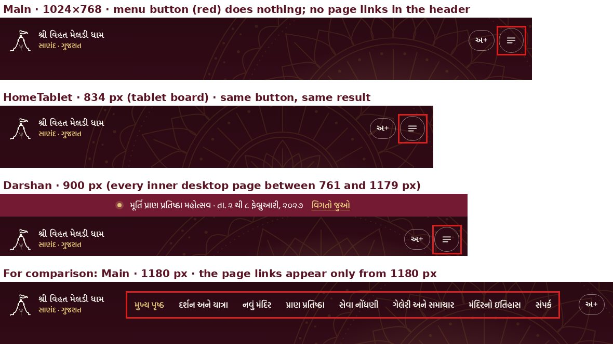
Main 1024×768, HomeTablet 834 px, Darshan 900 px: the outlined button has no action. Main 1180 px for comparison.
P2 — medium
P2
Seva desktop: help column ends halfway beside the long form
B1 · fix prepared (v107)
Boards
Seva at 1000 px and wider.
What happens
The right column (help card) ends while the form continues for about two screens, leaving an empty right half for 6–7 scroll positions at 1024–1440 px.
Root cause
The column is only as tall as its cards, and the section's overflow: hidden stops a sticky card from following the form.
Status
The fix is built and checked (sticky help card, 3 CSS rules, site.css only). It stays unpublished until you approve v107.
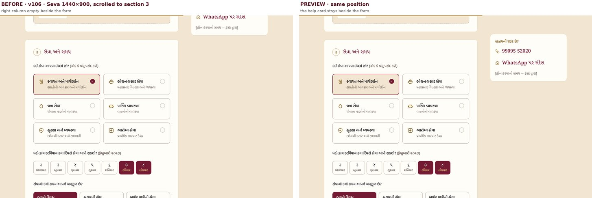
Seva 1440×900, scrolled to section 3. Left: v106. Right: v107 preview.P2
Seva form: error messages appear out of view after a failed submit
B2 · confirmed
Boards
Seva, SevaMobile (all widths).
What happens
Pressing “નોંધણી પૂર્ણ કરો” with empty fields shows a summary (“કેટલીક વિગતો બાકી છે”) and messages under the name, mobile and town fields. All of these are at the top of the form, more than 3,000 px above the button on a phone. The page does not move and focus stays on the button, so the visitor sees only the consent message next to the button. After ticking consent and pressing again, nothing visible explains why the form is still blocked.
Root cause
The form's script marks fields (.is-invalid) and fills the alert region, but does not scroll or move focus to it. Fields also lack aria-invalid and a link to their message (aria-describedby).
Proposed fix
On a failed submit, scroll to the summary and move focus to it (or to the first field with a problem); add aria-invalid and aria-describedby. No wording changes. The success message already works.
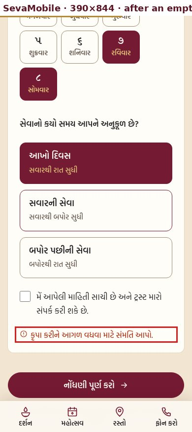
SevaMobile 390×844, immediately after pressing the button with an empty form.P2
Phone menu screen: close icon almost invisible; close always goes home
B3 · confirmed
Boards
MenuMobile (opened from every phone page).
What happens
The ✕ is maroon on maroon, 1.41:1 contrast; icons need at least 3:1. Only its thin ring (3.3:1) is visible. Closing the menu always opens the Home page, even when the visitor came from Darshan or Seva, and “મુખ્ય પૃષ્ઠ” is always marked as the current page.
Root cause
The site's general link colour rule .vm-root a outranks the design system's .vm-mnav__close { color: ivory }, because on this board the close control is a link. The menu is one shared static board, so its close link and current-page marker are fixed to Home.
Proposed fix
One scoped CSS rule restores the ivory ✕ (14:1). For closing, return to the page the visitor came from, with Home as the fallback; drop the fixed current-page marker or set it from that page. Your choice; see the questions below.
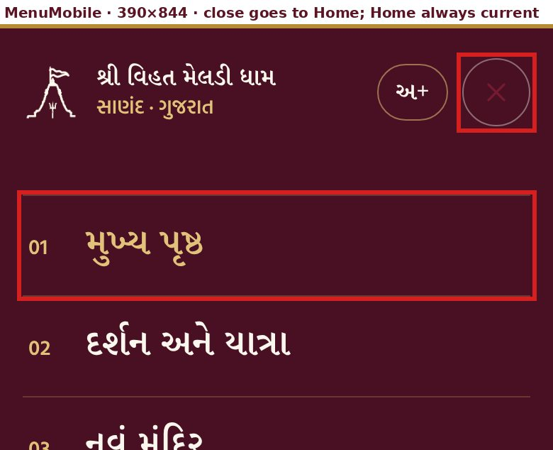
MenuMobile 390×844 (2× zoom).P2
Home hero button cut on 320–340 px phones
B4 · confirmed
Boards
HomeMobile at widths up to about 340 px, in both text sizes.
What happens
“મહોત્સવ વિશે જાણો →” is wider than its button; the first letter is cut at the left edge. At 360 px it fits with little side room.
Root cause
The phone home hero gives both buttons equal width (flex: 1 1 0, no wrapping labels; site.css line 619), and the button's overflow: hidden lets it shrink below its label. The inner-page heroes already have the guard min-width: max-content (line 1321); the home hero does not.
Proposed fix
Add the same guard to the home hero buttons on phones, so on very narrow screens the two buttons stack instead of squeezing. Nothing changes at 360 px and wider.
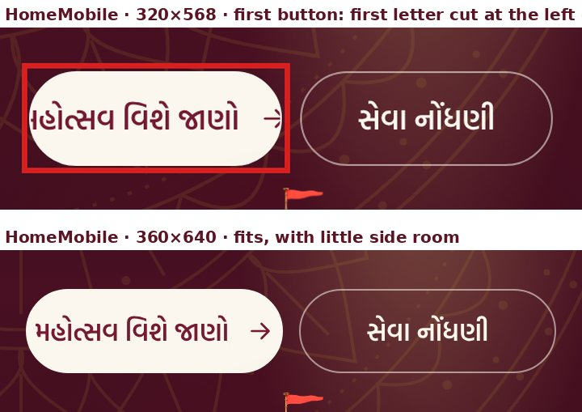
HomeMobile 320×568 and 360×640 (2× zoom).
P3 — polish
P3
Four gallery photos are small originals
C1 · content
Boards
Gallery, GalleryMobile.
What happens
“જય શ્રી લાખણેચી માઁ” (380×534 px), “જય શ્રી ગોગા મહારાજ” (393×534), “ભુવાજી શ્રી સુરેશબાપા” cut-out (470×501) and one સુરેશબાપા portrait (585×882) are shown at about their own size on desktop. On sharper screens (most phones and laptops) they look soft; the cut-out is enlarged 1.1× even on a standard screen.
Proposed fix
No design change. Larger originals from the trust, when available.
P3
Seva at 1000–1179 px: the festival day tiles wrap onto two rows
C2 · confirmed
Boards
Seva, 1000–1179 px (one row below 1000 px and from 1180 px).
What happens
The 7 day tiles (૨–૮ ફેબ્રુઆરી) split 5 + 2 at 1000 px and 6 + 1 at 1024–1100 px, leaving “૮ સોમવાર” alone.
Root cause
Fixed-width tiles in a wrapping row; the form column is narrowest at these widths because the help column sits beside it.
Proposed fix
Let the 7 tiles share one row (7 equal columns) at these widths.
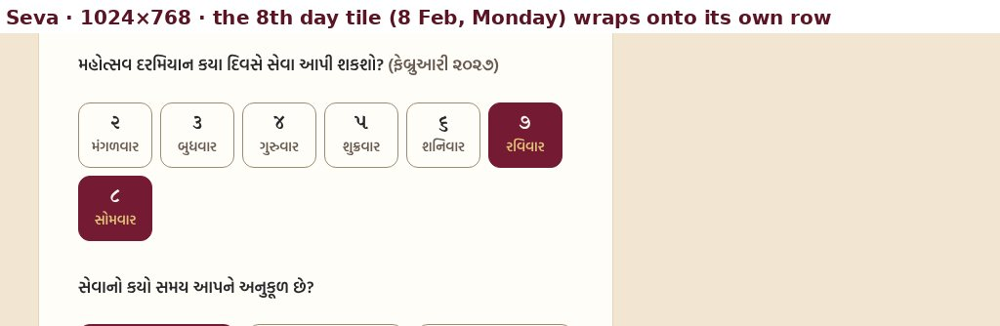
Seva 1024×768: “૮ સોમવાર” on its own row.P3
Festival night artists: names break at 320 px with large text
C3 · confirmed
Boards
PranPratishthaMobile, 320 px, large text (અ+) only.
What happens
Names wrap word by word (“ગોપાલ / સાધુ”), and “માયાભાઈ આહીર” runs 4 px past its column.
Root cause
The two-column card (date | avatars and names) leaves too little width for the names at this size.
Proposed fix
At 360 px and below with large text, place the date above the names.
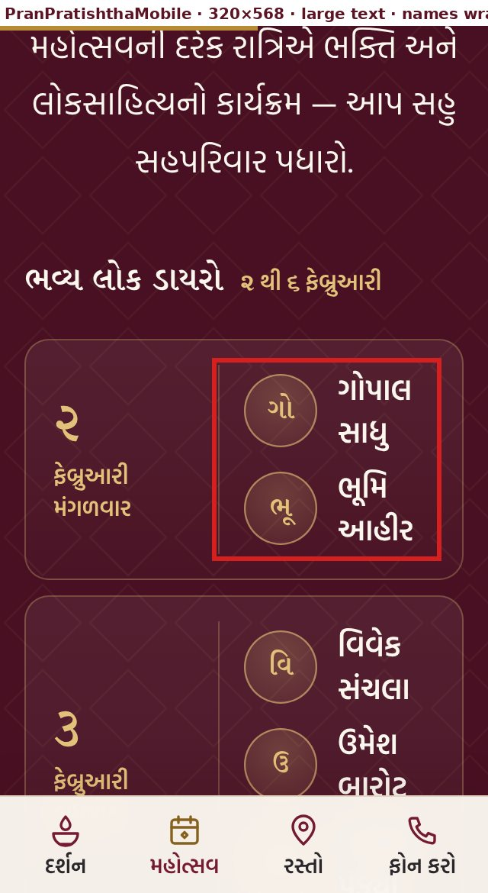
PranPratishthaMobile 320×568, large text (2× zoom).P3
Three jump links land with the heading touching the top edge
C4 · confirmed
Boards
Darshan and DarshanMobile (“પંચાંગ”, “યાત્રા માર્ગદર્શન”), NewTemple and NewTempleMobile (“નિર્માણ પ્રગતિ”). The other 42 jump links tested leave space.
Proposed fix
Add scroll-margin-top to those three targets.
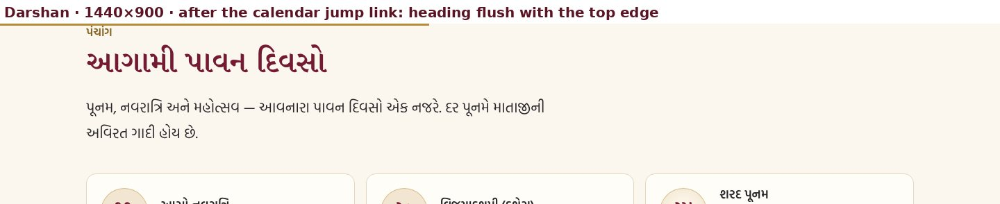
Darshan 1440×900 after the “પંચાંગ” link.P3
Smaller items
C5–C9
ID
Item
Where
Proposal
C5
Heading levels skip: footer “પૃષ્ઠો” h2→h4; Seva help card “નોંધણી પછી શું?” h1→h3. Affects screen-reader outline only.
19 boards; Seva, SevaMobile
Change the tag level; looks unchanged.
C6
Seva consent checkbox is 22×22 px (WCAG 2.2 asks 24×24). Its text label is also clickable, so the real tap area is larger.
Seva, SevaMobile
Optional: 24 px.
C7
Hero entrance animation takes 900 ms; the brief suggests 350–650 ms. Already off with reduced motion.
All heroes
Optional: 600 ms.
C8
Many images have no width/height attributes. Measured load shift stays low (≤ 0.073, lab), because their boxes have fixed sizes.
Deity art, gallery tiles
Optional: add attributes.
C9
Text-only page banners leave the right half empty at 1440/1920 px.
Contact, Darshan, Seva, NotFound
Approved design; no change unless you want art there.
For you to decide
Decision
Header and hero: where was text cropped?
D1 · brief §3
The brief says an earlier menubar adjustment, made to show the whole temple, cropped some text. This session's records do not contain that change, and I could not reproduce it: across 9 pages × 6 screen sizes (54 first screens) plus about 100 further hero measurements on 4 pages, no heading, date or button text was cropped or hidden under the header. The temple and deity art is fully visible in the first screen on every desktop size tested from 1024×768 up; on tablets in portrait (768–834 px) it sits below the text and 55–100% shows.
On phones the temple sits below the buttons, so how much of it shows in the first screen depends on screen height. Home: 36% at 360×640, about 45% at 390×664 (an iPhone with Safari's bars showing; emulated), 90–100% at 360×780 and taller. Festival page: 0–12% on short screens, 100% at 390×844.
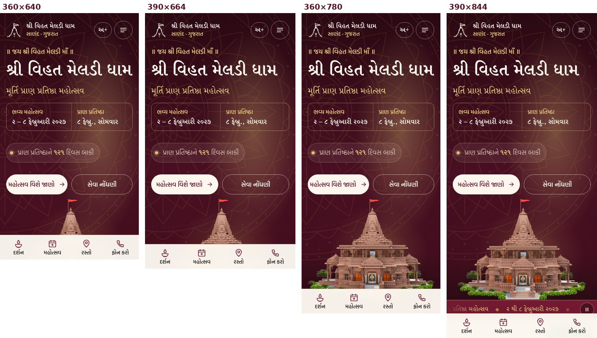
HomeMobile first screen at 360×640, 390×664, 360×780, 390×844.
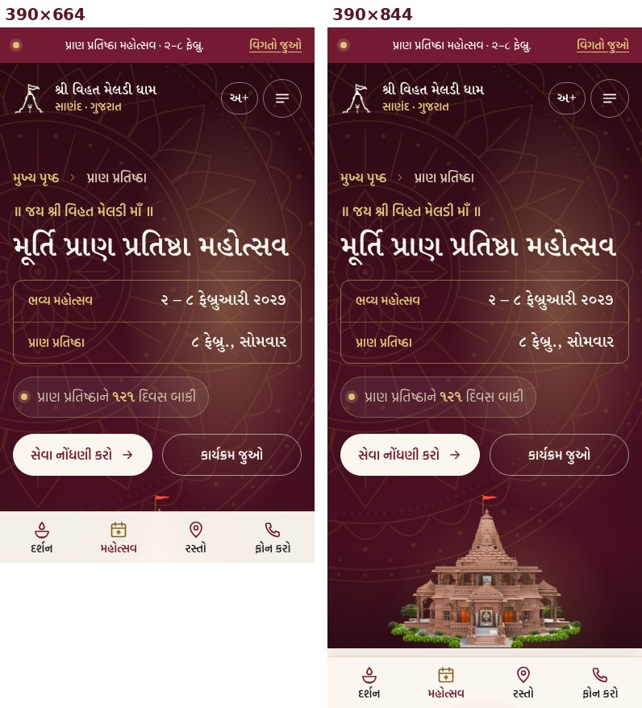
PranPratishthaMobile first screen at 390×664 and 390×844.
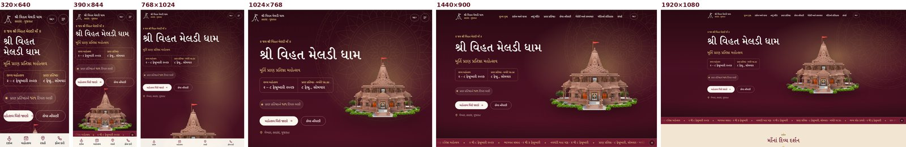
Home first screen at 320×640, 390×844, 768×1024, 1024×768, 1440×900, 1920×1080: no text cropped.
Questions before any fix
Seva v107: publish the prepared help-column fix?
Hero (D1): which page and screen size showed cropped text? And should the whole temple fit in the first phone screen? That would mean tightening the hero on short phones, never shrinking text.
Phone menu (B3): should closing the menu return to the previous page (recommended), or keep going to Home?
Order: approve the plan below as is, or reorder it.
Proposed fix plan
Each step is one version: preview with before/after pictures, your approval, publish, verify. v106 stays the rollback point. No wording, names, dates or artwork change in any step.
Version
Fix
Files
Size
v107
B1 Seva help column (prepared)
site.css
3 rules
v108
A1 working header menu, 761–1179 px
12 desktop/tablet boards + site.css
Medium
v109
B3 phone menu close icon and close behaviour
MenuMobile + site.css
Small
v110
B4 home hero buttons on 320–340 px phones
site.css
1 rule
v111
B2 Seva form errors brought into view
Seva, SevaMobile
Small
v112+
Polish C2–C5 (C6–C8 if you want them), one at a time or grouped as you prefer
site.css, heading tags
Small each
—
C1 larger gallery photos; D1 after your answer
Trust / your decision
—
Checked and found correct
No sideways scrolling and no clipped Gujarati text in 159 page renders: phone files at 320, 360, 390, 430, 540 px; desktop files at 768, 900, 1024, 1280, 1440, 1920 px; the tablet boards at their own widths; large text at 320, 390, 1024, 1440 px. A second scan of every box with a border or background (138 runs) found only B4 and C3, apart from closed FAQ answers and the festival day carousel, which are hidden on purpose.
Contrast flags on dark sections were false alarms; close-ups show readable light text on dark ground (countdown pill, festival main-day card, New Temple area cards, night strip).
Buttons that seemed to do nothing in the click test (“બધું”, “આખો દિવસ”, “૨ મંગળ”) are options that are already selected.
A blank gallery tile in a full-page capture was lazy loading; the photo loads when scrolled to.
Keyboard: a visible focus ring on every one of the first 30 Tab stops (fewer on short pages) on 20 pages; skip link present on all content pages.
Reduced motion: every animation stops on the 11 pages tested.
All 48 in-page jump links on 16 pages reach an existing target; none lands under a fixed bar.
Seva form: the error summary, field messages and success message all appear (only their placement is B2).
Load-time layout shift ≤ 0.073 on every page (lab measurement; 0.1 is the usual limit).
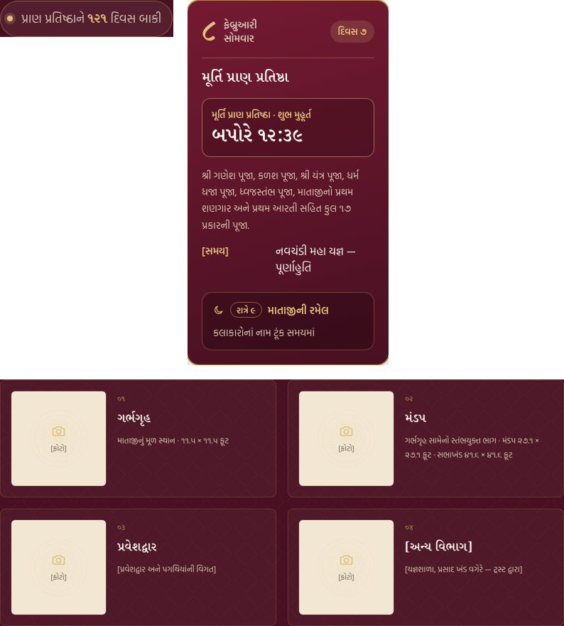
Close-ups of the sections the automatic contrast check flagged.
Not verified
Only Chromium was available. Firefox, Safari/WebKit and real iPhone or Android devices were not tested.
Core Web Vitals (LCP, INP, field CLS) were not measured; there is no hosted site or real-user data.
No screen reader was run.
Hover states and real touch were not exercised.
Phone heights with browser bars (such as 390×664) are emulated assumptions.
Fonts were loaded from a local copy; loading from Google Fonts on the live site was not checked.
Boards were tested as web pages in a local server with the design's runtime, not on the Claude Design canvas.